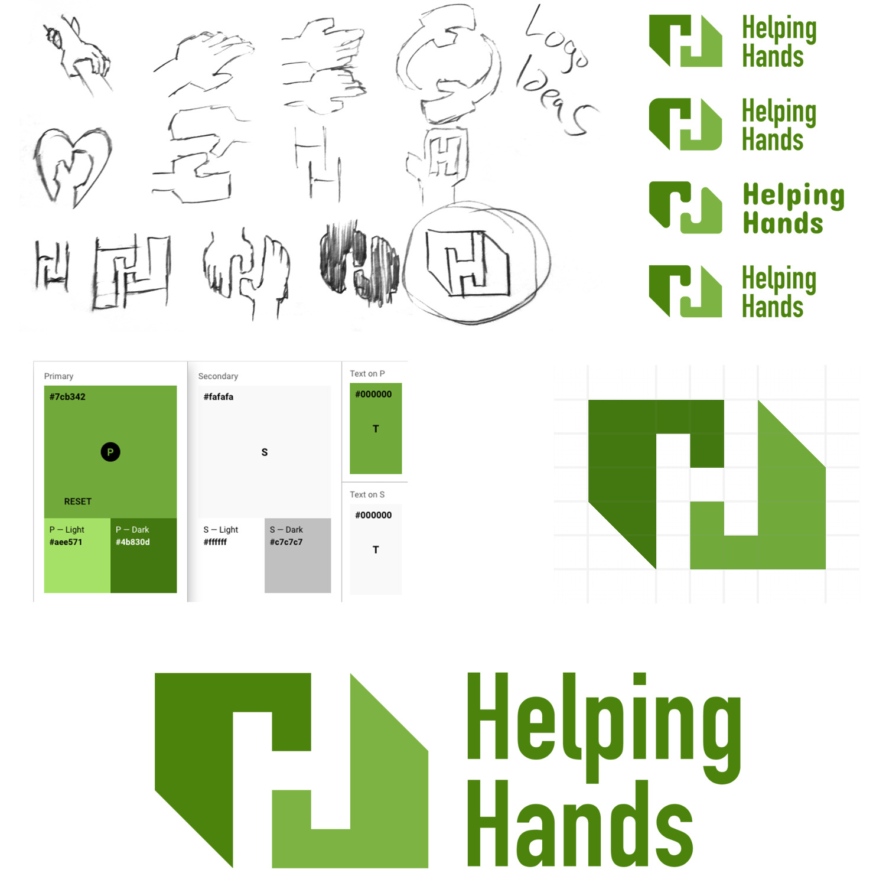
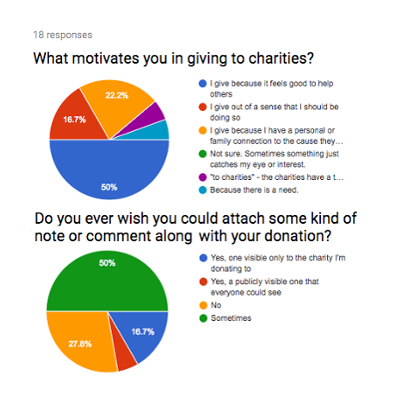

-
 my development and design blog.
my development and design blog. -


 Your message has been sent. Thank you!
Your message has been sent. Thank you!
-

Josh Christofferson UX / UI FrontendBased out of
Denver, Colorado -
 a
a
case study
in desktop crowdfunding design.-
Helping Handsa case study

-
Helping Hands is a fictional crowdfunding site dedicated solely to registered charities and nonprofit organizations.
Its aim is to provide donors with a unified hub for finding and donating to trustworthy causes.
-
Usability Hub Sketch InVision Draw.io GitHub Marvel Illustrator Photoshop - Deliverable
High quality desktop and tablet mockups
-
-

The market is currently saturated with crowdfunding websites. An analysis was done on Kickstarter, JustGiving, GiveForward, and GoFundMe.
While these sites are all useful, none of them focus on the goals of Helping Hands. Namely, validation of trust and a focus on non-profit businesses only.
A SWOT analysis, User Personas, and User Stories were crafted to give focus towards meeting the goals mentioned above.
These revealed the need for the site to be simple and straightforward.
-

A user flow was created to detail all the main processes of the site. Particular emphasis was given to the onboarding process to make it as streamlined and efficient as possible.
Attention was also given to make the donation process itself clear and straightforward.
-

Hand-created sketches and Balsamiq were used to explore a large number of low-fidelity layout ideas before moving to high fidelity mockups.
These high fidelity mockups were created using Sketch. They helped to nail down precise color schemes, placements and UI design.
-

The logo was key in creating the brand for Helping Hands. The final design was chosen to resemble two hands reaching for each other, the whitespace between forming the distinctive “H”.
Green and white were chosen to evoke hospitals, vitality, and health. A light gray was used for a number of backgrounds to help offset some things from a pure white backing.
Montserrat was chosen as the primary font for the subtle way its bowls and shoulders connect to stems.
-

Surveys, preference tests, and directed user observations were used to inform and modify the design at several points. This resulted in some clear user feedback and hard data that directed design elements and flow for Helping Hands.
The comments section survey was particularly informative. 17 of the 18 responses indicated that receiving recognition for their donation was unimportant or unwanted, but only 5 of the 18 said they’d never want to add a comment with their donation. This resulted in a heavily modified comments section that exists only to raise awareness and credibility.
Observations of users performing tasks confirmed that the final layout is both clean and easy to navigate and provides a positive UX.
-
Future Growth

Helping Hands is severely limited in its lack of a mobile-first approach. While desktop is what was requested, a move to adding mobile support would be smart.
I recommend the following additions:
- Adding mobile support
- Adding one-click donations for impulse support
There were two large things I learned from this project:
- The extreme value in creating a cohesive style guide along with the branding very early in the design process.
- The value of insisting on a complete list of user stories and MVP requirements right at the beginning of the project.
-
Cornucopiaa case study
-
 Contents
Contents -
-
-
-
-
-
-
-
-
Airport Navigatora case study
-
Contents
-
-
-
-
-
-
-
-

case studyon the journey of this portfolio.
-
The Portfolioa case study

-
I'm a former teacher turned web designer and developer. I've had some web design experience in the past and decided it was time for a career shift to go back to this.
-
Usability Hub Sketch InVision Draw.io GitHub Atom Illustrator Photoshop - Deliverable
This portfolio ;)

I went through a large number of designer portfolios before I started. I wanted to get a feel for what things were required and what things could be bent to creative individuality.
I saw a wide variety of design in portfolios and decided to go with something that would show off CSS Grid as well as being unique.
What content to put on the portfolio site was mostly laid out by Bloc. I added a blog at the recommendation of my mentor and wanted to include this case study on the portfolio itself to show my thoughts on how I made this.

The very first principle I set down was that nothing should be more than 2 clicks deep. One to open a project, one to expand images.
Major effort went into the HTML architecture. I did a refactoring partway through to lay out content to better aid accessibility.

Testing focused around intuitive interface. Particularly on what elements could be clicked and what would happen upon clicking. I also wanted to make sure the visual heirarchy is clear and that scaled text is always legible and fit the surroundings well.

The logo was explicitly designed to be both professional and personal, showing that I'm not a company, I'm an individual.
Given my background teaching science, I wanted to show my analytical side as well as my creative side. The clean, square motif was how I did this.
Everything else fell into place based on these. The font (Exo 2) mimics the signature with thin clean lines. Colors were designed to give the different sections of the site prominence. The animated icons were designed to mimic the signature. (And show off the coolness of Vivus.)
The portfolio went through many iterations over the design cycle. Early versions featured all grid boxes the same size or boxes adjusting in height to maintain a non-scrolling screen.
Particular attention was paid to making sure interactables such as clickable elements were intuitive. Subtle cues like cursor changes and color were used to achieve this subtly.
Feedback was also key in designing the "about me" section. User suggestions led to the inclusion of the skip feature.
Lastly, mentor and Bloc feedback were also key in the design process. Their input led to better development of the "x" button, the ability to hit "escape" and proper functionality for the back button.

Like all personal growth projects, my ideas and style have changed throughout this process. I find it hard to look at this site without being subjective and seeing things I wish to change. While I'm sure I'll eventually rewrite the entire site, I do have a few short term goals:
- Some code refactoring. I'd especially like to split the css up into multiple files
- Add more subtle animated touches to many of the elements. Text fade-ins in particular.
- Refinement and styling to the blog. At the moment it uses a simple wordpress template with little personality. This can certainly be made better.
- Add a few more projects to better show my array of skills.

-

-
The Vale of ChildhoodQuest: reach adulthoodSkills honed:
- Integrity
- Strong work ethic
- Critical thinking
- Playing and creating games of all kinds
- Love of B movies
The Forest of CollegeQuest: BA in Astrophysics
MA in Secondary Sci EdSkills honed:- Data analysis
- Proper testing procedure
The Mountains of LASPQuest: Programmer / scientist / webmasterSkills honed:- Programming: IDL, js, HTML, PHP
- Large scale data manipulation
- Web design
The Swamp of Fort Lupton SchoolsQuest: HS science teacherSkills honed:- Immunity to deadlines
- Cross-department collaboration
- Feedback and refactoring proficiency
Wed TownSide QuestWife joins!The Town of LiteratureQuest: Write & publish a bookSkills honed:- Large-scale project management
- Breaking projects into workable steps
The Hills of BelleviewQuest: HS science / calculus teacherSkills honed:- Team player mastery
- Presentation skills mastery
BabyvilleSide QuestDaughter joins!The Lakes of WyzantQuest: Independent tutorSkills honed:- Interpersonal communication
- Efffective and adaptive strategy
KidtownSide QuestDaughter joins!The Plains of TerraXMLQuest: Software engineering contractorSkills honed:- Programming: Java, Xquery, Jquery, C#
- JIRA workflow
The Desert of HSSQuest: Security officerSkills honed:- Adaptability and quick learning
- Attention to detail and protocol
The Unknown FutureQuest: Unknown!Possibly useful skills:
- Unity3D (4 min demo)
- Designer Track through Bloc. Experience with:
- InVision, Balsamiq, Sketch, and Photoshop (sample)
Here's a bit of mine.